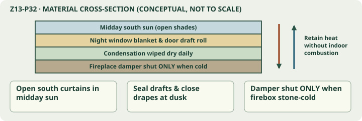

Z13-P32 · Home survival and utilities · New manuscript
Reduce indoor heat loss and manage condensation during cold-weather outages
Retain residential thermal mass safely while preventing unhealthy indoor moisture, mold, and frozen window locks.
When it applies · Multi-day cold-weather outages where mechanical HVAC fans and dehumidifiers are offline.
Equipment · Heavy drapes/blankets, rolled draft-stopper towels, indoor thermometer/hygrometer if owned, and dry cloths.

Actions
- Maximize passive solar gain by opening south-facing window shades during bright winter midday sun, then closing heavy blinds, curtains, or pinned blankets tightly before sunset to cut radiant glass heat loss.[U10]
- Block cold infiltration around exterior door sweeps, pet doors, attic hatches, and unused fireplace dampers (ONLY once the fireplace is verified completely cold and unused).[U10, U18]
- Monitor indoor condensation buildup when several occupants share one small closed room—wipe wet window sills dry daily and air briefly during warmest midday hours if moisture pools heavily, while maintaining zero indoor combustion.[U10, C16]
Failure recognition · Closing a fireplace damper while live embers remain in the firebox, filling the living room with lethal carbon monoxide.[U18, C07]
Verify · Confirm passive south-sun/night-curtain cycle active, fireplace 100% cold before closing damper, and condensation managed cleanly.[U10, U18]
Stop or change course · Dropping interior temperatures approaching freezing or persistent damp chill affecting vulnerable occupants triggers relocation to heated shelter.[U10, U17]
Evidence and editorial notes
- C07 · CPSC · Carbon Monoxide Fact Sheet (current web edition)
- Section: CO poisoning symptoms; what to do if suspected · Conditions: Suspected carbon monoxide exposure
Support: Escape to fresh air immediately and contact emergency services. Symptoms can include headache, dizziness, nausea and confusion.
Limitations: CO is colorless and odorless; symptoms mimic viral illness or altitude fatigue and can incapacitate sleepers without waking. · Conflicting evidence: None; aligns with CDC-CO.
Editorial note: Standard CO emergency stop condition across Z02 and Z03. · Specialist reviewer: Carbon monoxide safety and emergency medicine
Primary source · checked 2026-11-24 - C16 · CDC · Carbon Monoxide Poisoning Basics (current web edition)
- Section: Carbon Monoxide Poisoning Basics > Sources and Prevention · Conditions: Any enclosed or semi-enclosed structure, garage, porch, tent, or vehicle
Support: Never burn charcoal, operate camp stoves, or run fuel-burning heaters inside homes, garages, tents, or vehicles even with doors or windows partly open.
Limitations: Vent cracks and open garage doors do not prevent lethal CO accumulation. · Conflicting evidence: Refutes dangerous myth that cracking a tent vent or garage door makes indoor combustion safe.
Editorial note: Hard-stop rule across all Z02 ventilation and Z03 combustion cards. · Specialist reviewer: Carbon monoxide safety and emergency medicine
Primary source · checked 2026-11-24 - U10 · FEMA / Ready.gov · Winter Weather (current web edition)
- Section: Winter Household Resilience > Frozen Pipes, Ice Dams, and Heating Loss · Conditions: Sub-zero Upper Midwest winter outages and prolonged cold snaps
Support: Prevent burst pipes by insulating exposed lines, keeping cabinet doors open, shutting off and draining water lines per plumbing guidance if indoor temperatures drop toward freezing, and consolidating household occupants into one safe insulated interior room.
Limitations: Draining hydronic boilers or gas water heaters requires exact manufacturer/plumber steps to prevent equipment damage or gas leaks. · Conflicting evidence: None; regionalizes winter home defense for Minnesota conditions.
Editorial note: Anchors winter pipe protection, thermal-zone consolidation, and abandonment thresholds. · Specialist reviewer: Residential plumbing, HVAC, and cold-weather emergency management
Primary source · checked 2026-11-24 - U17 · FEMA / Ready.gov · Evacuation (current web edition)
- Section: Household Evacuation Thresholds When Utilities Fail · Conditions: Uninhabitable indoor temperatures, sewage backup, persistent CO alarm, or structural/utility hazard
Support: Establish clear pre-agreed exit triggers to relocate to a warming center, hotel, or relatives BEFORE indoor freezing, carbon monoxide alarms, medical-device battery exhaustion, or impassable blizzard roads trap occupants.
Limitations: Waiting until indoor pipes burst or batteries hit zero removes safe travel options. · Conflicting evidence: None; aligns with T13 and E14.
Editorial note: Defines objective household abandonment thresholds in Z13. · Specialist reviewer: Emergency management and cold-weather operations
Primary source · checked 2026-11-24 - U18 · NFPA · Heating Fire Safety (current web edition)
- Section: Wood Stoves, Chimneys, Ash Disposal, and Fuel Storage Safety · Conditions: Residences heated by properly installed wood stoves or fireplaces
Support: Burn seasoned dry wood only, clean creosote-prone chimneys regularly through qualified sweeps, empty cooled ashes strictly into lidded metal containers set outdoors well away from decks and structures, and never burn treated lumber or trash indoors.
Limitations: Embers stay hot enough to ignite cardboard or wood decks days after a fire appears dead. · Conflicting evidence: None; critical winter wood-heat fire prevention boundary.
Editorial note: Covers solid-fuel residential heating maintenance and ash-fire failure modes. · Specialist reviewer: Fire safety and certified chimney/HVAC trades
Primary source · checked 2026-11-24
Source lineage · FEMA Ready.gov Winter Weather and NWS Cold Safety; new manuscript · Classification · New manuscript.